By Frank Savage, Development Lead, Xbox Advanced Technology Group
This white paper describes how an artist can use the Performance Investigator for Xbox (PIX) tool to obtain useful statistics about the art they are previewing using the Xbox Preview Pipeline.
The PIX tool can be used to determine many interesting and useful facts about the performance characteristics of an application. Most of these are not of much interest to the artist. The artist is concerned with things like:
The PIX tool combined with the instrumentation in the XbView application of the Xbox Preview Pipeline can provide these answers and more.
First, preview a piece of art using the Xbox Preview Pipeline. Once the image or model is being displayed on the Xbox, turn on animation if animation times are interesting or just leave the viewer in model view if the object has no animation or animation time isn't a concern.
To run PIX, from the Start menu click All Programs–>Microsoft Xbox SDK–>Performance–>Performance Investigator for Xbox (PIX). In order to gather accurate performance information, we need to record a frame that is analyzed by PIX. To capture this data, click File and then click Record. A dialog box will appear that looks like this:
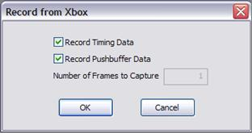
Click OK and PIX will record the data for the current scene. There will be a progress bar displayed and then PIX will drop into its standard view. At this point, PIX has the captured data and is ready for use.
PIX has three main windows: the Timeline window, the Events window, and the tabbed window.
The Timeline window shows the entire frame that was captured on a timeline. The top timeline shows the CPU timings for the frame and depicts any logged events as blocks of time based on the duration of the event. The CPU is the main processor, which in the case of the Xbox video game system, is an Intel Pentium III running at 733 Mhz. The timeline below the CPU timeline depicts GPU events. These are the events generated by the video card actually processing the vertices and drawing the polygons. Events on both timelines are color-coded based on the type of event. An event that is linked on both the CPU and GPU timelines will have an arrow connecting the two events. In the example shown, the Clear event (which clears the screen) has a CPU event associated with it that shows when the event occurred during the frame and a GPU event showing when the GPU cleared the screen and how long the clear took.
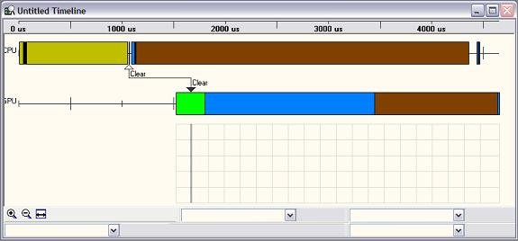
This view is designed to give the user an idea of how long events took with respect to each other. Very tiny slivers are always better than big blocks. For more information on this window, including the color-coding, see the PIX Timeline Window topic in the XDK documentation.
The Events window shows the list of events that occurred during the captured frame. By default, the list is in the order that the events occurred. It's easy to change the sort order by clicking on the column headers.
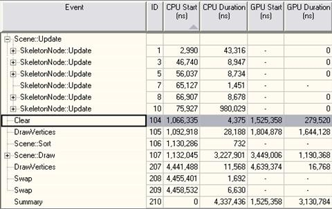
When PIX first captures data, this view shows the CPU and GPU start and duration times and not much else. This view also shows a number of plus signs next to certain events. These represent a series of events that are currently lumped together as a single event. To expand and see what additional events were lumped into that event, click on the plus sign. In the above example, the Scene::Update event has been expanded. This event was made up of six SkeletonNode::Update events. Five of the six Skeleton::Update events have additional events inside that are not shown. Again, to reveal these events, click on the plus sign next to the event in question. All of the start and duration timings are in nanoseconds. To convert these to milliseconds, divide by 1,000,000. In the example above, the CPU duration of the Scene::Draw was 3,277,901, which is 3.277901 milliseconds. The highlighted event in this view determines how the arrows are drawn in the timeline view. In this case, the Clear event is highlighted and the arrows in the timeline view show the CPU and GPU timeline bars corresponding to the Clear event. The additional, grayed-out columns are filled in later by starting the analysis application, which we'll cover shortly.
Note Most nontechnical people do not think in terms of milliseconds. For them, the following conversions are provided. A game that runs at 60 frames per second can spend up to 16.67 milliseconds on each frame. A game that runs at 30 frames per second can spend up to 33.33 milliseconds on each frame. Thus, this example, which takes about 3 milliseconds to execute, is consuming about 20 percent of the total time the game would have to do all of the work needed for a single frame at 60 frames per second. At 30 frames per second, this example is consuming about 10 percent of the total time.
This window has a number of tabs that show different bits of information about the scene.
Almost all of this information is very technical and not of much use to the typical artist. The two tabs that are useful, Images and Summary, are covered below.
For more information on any of these windows, see the XDK documentation topics PIX Images Window, PIX Call Stack Window, and so on.
PIX can provide information on how long things took. It can show you how long the geometry took to skin and animate, how long the actual triangles took to render, or how long the entire scene took to draw. PIX can also show you the numbers of things that happened. It can show you the number of vertices drawn, either on a whole scene or on an individual model basis. It can show the number of triangles drawn. PIX is also good at graphically displaying information. It can show you the texture(s) used for a given model, the cost of that model in terms of pixel fill rate, how much overdraw a given model had, or what the wireframe for the given scene or model looked like. Each of the sections below shows how to retrieve a particular piece of information from PIX.
Memory and performance statistics can be obtained by clicking on the Summary tab in the Tabbed Window.
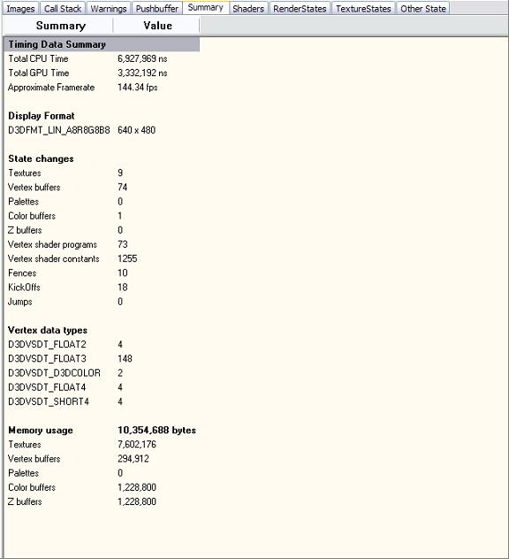
This shows the total contiguous or video memory usage for the scene. Additional memory information is available in the statistics view mode of XbView used with the Xbox Preview Pipeline. This memory information is useful in that it breaks the video memory usage down by textures and vertex buffers. Chances are, the game will use this much memory as well because these resources are as compact as they can get, and the game will be using the same ones. Note that textures can have DXT compression turned, which will shrink their size. It is possible to turn that compression on for individual textures in the Xbox Preview Pipeline, but it is not trivial to do. For information on how to do this on a texture-by-texture basis, see the white paper Deep Exploration Advanced Usage Guide.
There is some performance information on this screen as well. The total CPU time and GPU time are shown for the entire scene.
In order to get the primitive counts and other potentially useful statistics, it's necessary to run the PIX Analysis Application. This is easy to do. On the File menu, click Begin Analysis. The following dialog box appears:
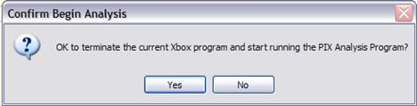
Click Yes, after which a progress bar is shown and the Xbox switches to the PIX analysis application. It can take ten or so seconds before the progress bar finishes. When it does finish, all of the grayed out slots have been filled in where data in that slot would make sense. For example, if the Event didn't actually draw anything (like a Clear event), the number of triangles or vertices will not have data because Clear doesn't use them.
Here is a breakdown of the useful columns filled in by the Analysis Mode and what they mean. The other columns are not as useful to the average artist. For more technical artists, the complete documentation on these other columns is in the PIX Events Window topic in the XDK documentation.
Under the Tabbed Window, more useful information has been created by the Analysis Mode. Clicking on the Images tab brings up the following screen.
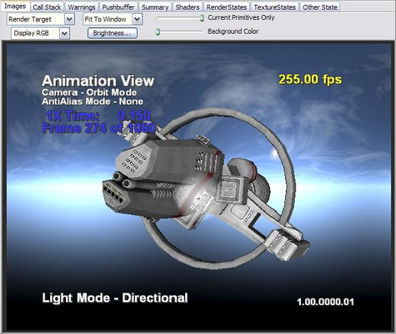
Note the drop-down list next to the display selection drop-down list with Fit To Windows in it. This drop-down allows you to select the size of the image being displayed in the window. Looking at the events used in drawing this model:
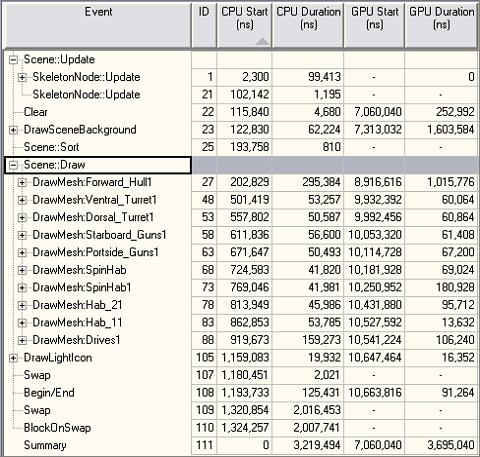
Highlighting each DrawMesh:nodeId will show the current screen with all of the draw calls up to that point executed. In this way, an artist can click on each DrawMesh event and see what the screen looks like at that point. In the above example, clicking on DrawMesh:Ventral_Turret1 would show you the scene after the DrawSceneBackground event (which is the background image), the DrawMesh:Forward_Hull1 draw event and the DrawMesh:Ventral_Turret1 draw event. It looks like this:
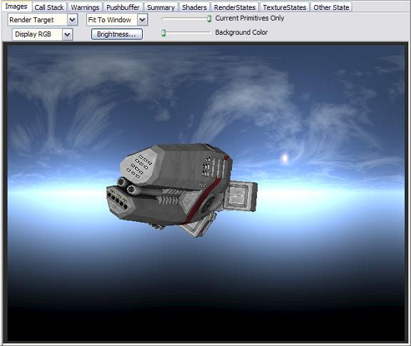
The artist can easily see each draw event and its effect on the final image using this method. The Images window can also display other useful images. By clicking on the drop-down box in the above image with "RenderTarget" in it, a number of other displays are made available. The following section lists the views most useful to artists. For a complete description of all Images views available, see the PIX Images Window topic in the XDK documentation.
Shows the wireframe view of the current display.
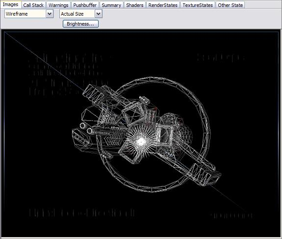
One useful thing to check out in wireframe view is how "wireframed" the model looks. If you see an image that doesn't look much like a wireframe, this model has too many faces for the current view size. The GPU prefers to draw triangles that are at least four pixels in size. Smaller than four-pixel triangles take the same amount of time to draw as a four-pixel triangle. This view allows you to load individual LODs of an object in the Xbox Preview Pipeline, move the camera on the Xbox so the object is the size that the current LOD is intended for on screen, and then turn on wireframe to verify the triangles aren't too small.
Shows a gray-scale image depicting the amount of overdraw in the current view.
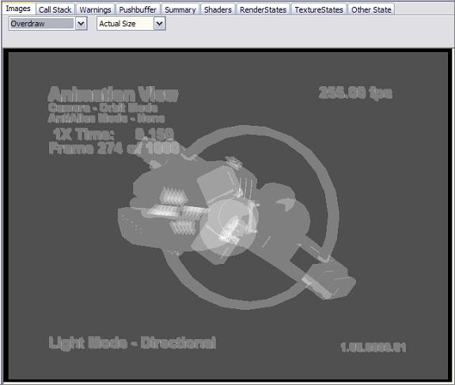
The lighter gray the pixels are, the more overlapping triangles were drawn for those pixels.
Shows the textures used for the currently highlighted draw event.
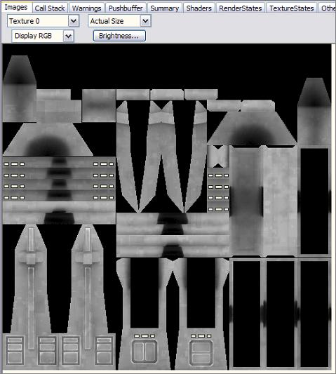
You can also display all four texture stages at once using the All Textures selection.
Shows how painful each pixel was to draw in a gray scale image.
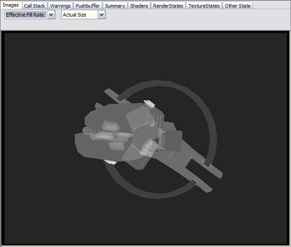
The lighter the gray scale, the more GPU work was needed to render those pixels.
The Events that an artist cares about are contained in the Scene::Update tree and the Scene::Draw tree. The Scene::Update tree shows how long the art is taking to update. During any given update, the viewer does a bunch of work on the CPU to prepare the scene for rendering. This works consists mainly of applying the animation data to the various nodes in the hierarchy. The Scene::Draw tree shows how long the art took to draw. This not only includes the actual GPU draw times but also the time spent computing the Bones on the CPU for that frame.
Looking at a typical Scene::Update tree, here is what the Events mean.
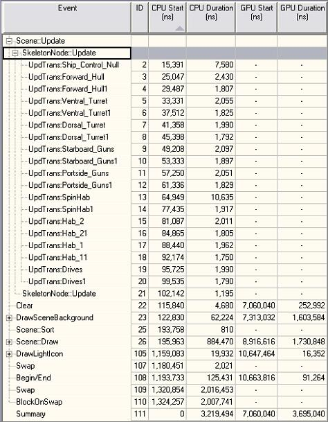
Expanding the view for Scene::Update yields the above data for this model. There are two SkeletonNode::Update events. The second one did almost nothing. It consumed about 0.001 milliseconds and had no child events. The first SkeletonNode::Update has a number of additional child events. Each of these events represents a specific node in the hierarchy. The names of the events are taken from the names of the nodes themselves in the actual art file. In this case, the art file had nodes in the hierarchy with names like "Ship_Control_Null" and "Forward_Hull." The UpdTrans:nodeId events are the amount of time that node took to update itself. Note the UpdTrans:Ship_Control_Null event and the UpdTrans:SpinHab events both took significantly more time to complete than the other events. This is because they both have animation data associated with them, and the update code does more work when it must apply animation data to a node of the hierarchy. Because none of the events in the Scene::Update tree make any kind of draw calls, the GPU duration is meaningless. That's why it's a series of dashes.
It's not only useful to know how long each event took but also useful to know how long all of the events took together. This is the reason that the hierarchy of events can be collapsed and expanded. Look at the unexpanded view,
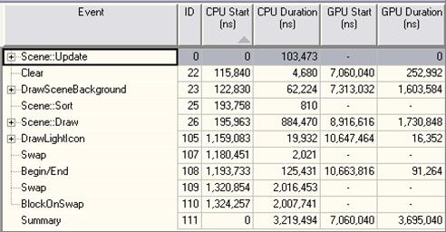
Notice that the total time for the Scene::Update was 0.103 milliseconds (103,473 ns.) By expanding and collapsing the hierarchy, the exact data is pretty easy to obtain. In this example, expanding the Scene::Update (shown below with the Scene::Draw tree) gives you two SkeletonNode::Update events timed at 99,413 ns and 1,195 ns, respectively. The 99,413 ns is a summation of all of the UpdTrans:nodeId node update events.
The more frame nodes you have that need animation data applied to them, the longer the Scene::Update portion will take. In this case, we have a fairly large hierarchy but animation only applied to two nodes, so the Scene::Update doesn't take long. If a hierarchy had significantly more nodes and all of them applied animation data, this time could grow to 1 millisecond or more. It should be possible to budget this time and make sure that the art doesn't exceed the time allocated for the update based on the object in question. For example, it might be perfectly acceptable to have the main character in the game consume a millisecond during its update but a single rock or tree should probably not be consuming more than 0.05 milliseconds or less.
These numbers are different for every game and every kind of object. Consult with the development staff for real numbers. They will almost certainly reply that the numbers in this tool are useless. They are not. There should be a mapping between the update numbers in the Xbox Preview Pipeline viewer and the update times in the actual game engine. In other words, if the update for a given object takes 1 millisecond in the viewer and 0.5 milliseconds in the game, it's probably OK to assume that anything else that takes 1 millisecond in the viewer will take about 0.5 milliseconds in the game. If nothing else, it's one more benchmark the artist can apply before involving a developer to determine if the art meets performance specifications.
The Scene::Draw tree looks something like this.
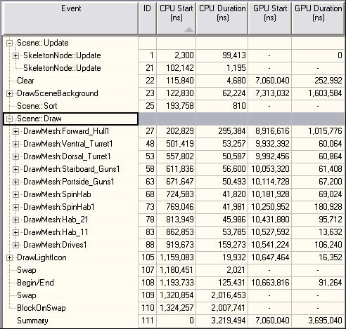
Expanding the tree for the Scene::Draw event shows all of the draw information for this model. Each node that drew something on screen is shown here. The main difference is that there are GPU durations here because the GPU actually did work to transform and draw the geometry. The duration for each component on both the CPU and GPU are easy to see. For example, the Forward_Hull1 mesh took a little over 1 millisecond to transform and render on the GPU and about 0.3 milliseconds of CPU time. Again, the summation is available by simply collapsing the Scene::Draw time. Looking back at the earlier dumps, the total time was 0.884 milliseconds and 1.731 milliseconds for the CPU and GPU, respectively. Expanding the DrawMesh:nodeID events is possible and will show the amount of time it took to set the vertex shader constants (all on the CPU) and the amount of time the actual draw call took (both CPU and GPU.) This is interesting but not especially useful information to the artist.
A budget can be constructed for the draw times; you may want to encourage the development staff to provide them.
Each of these events is color-coded in the timeline view according to the following table:
| Event Name | Color |
|---|---|
| Scene::Sort | |
| Scene::Update, Scene::UpdateNoAnimation | |
| SkeletonNode::Update | |
| UpdTrans:nodeId | |
| Scene::Draw | |
| DrawMesh:nodeId | |
| ApplyVSConstants | |
| SetBone:nodeId |
The Xbox Preview Pipeline combined with the PIX performance analyzer can provide a wealth of information about the art being previewed without any developer intervention. While it is always useful to have budgets, often artists are working in a void and must take a developer's word that their art was done correctly. The PIX tool gives the artist a performance "court of appeal" on top of the court already provided by the Xbox Preview Pipeline for visualization.